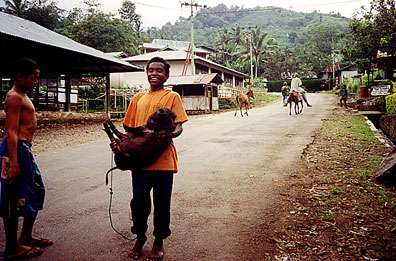

Sent: 11 Jan 2000 14:35 GMT
web version, with
|
|
| Prior Trav-E-Log: PelniAgain | Flores is ... Kelimutu, and the gateway to Komodo Dragons ... |
(Note:) This is the 17th in a series of Trav-E-Logs sent while traveling in S.E.Asia between Oct 16, 1999 and Jan 22, 2000.Hi folks,
Please read the three messages sent today in the proper order. First read "Sulawesi", then "Pelni Again", and lastly "Flores". THIS IS the 3rd. message, about Flores.
We arrive at Maumere, Flores, at 2 AM, and start bargaining with taxi and bemo drivers for transportation to Moni, 100 KM and 5 hours from the port of Maumere. I'm the only one that stays awake for the drive, and record the time of sunrise on December 31, 1999.
The 5 of us stay at Home Stay Amina Moe, and decide to buy a whole pig, and order 5 liters of local wine, packaged in bamboo flasks, for the evening festivities. We also pay her for the truck ride to Kelimutu, scheduled for tomorrow morning. A westerner that lives in the next village invites us to the only party in town, which is at the church across the street. Our New Years Eve feast was delicious, but contained everything from the pig except the meat. We figure it was shared and eaten by the family and friends of Amina Moe. The "wine" is delivered in 2 filthy plastic containers that smelled and looked like they were used to transport kerosene -- the volume amounted to about 2 1/2 liters. Mom tells us it is difficult to buy anything at any price, as everything is sold out for new years. I try one glass of the liquid, and decide I don't need any more. Primarily folks in the 15 to 30 age bracket attended the rather loud party in a church recreation hall. With nothing to hold my interest, I walked the 100 yards back to my room and retire, just after midnight.
At 4 AM, we hop in a very large, flatbed truck outfitted with 2 x 8s as make-shift seats to transport lots of people. 12 westerners are heading to the three colored lakes of Kelimutu for the dawn of the year 2000. The truck driver won't begin the journey, because he insists on full payment before he leaves Moni. Finally, one of the tourists admits he has not paid, and does not have change. He shows me his money, then I pay for him, and work out proper change. It takes about an hour to reach the parking lot, from where we have to walk in the dark the last 15 minutes to reach the top. A rocky path leads from the parking lot to the summit, past rest and picnic areas. At first you see some low trees, then the landscape becomes barren near the craters. From the summit, 2 crater lakes are in one direction, and the 3rd is behind you. The only way to see all 3 at the same time would be from a perch in the sky. The gentleman who guided us this last 15 minutes is actually a vendor, and spreads out a sash to sell rose tea, coffee, and cookies at the summit. We can see all three lakes in the twilight - but as 5:30 rolls around, the sun is obscured by clouds. We don't see the sun until after 6 AM, but the view is still a spectacular sight for January 1, 2000. We have been incredibly lucky to have good weather in the rainy season, on top of a mountain that attracts every cloud in the sky.
While enjoying the view, a couple from Hong Kong mentions they would also like to arrange a 4-day boat trip from Flores to Lombok in a few days from now. I tell them we are planning the same, and that such trips may require a minimum of 6 tourists. We agree to look for each other in Labuan Bajo, the far end of Flores. They will be taking the truck down to Moni shortly, while the four of us plan on hiking back down, as the guidebook mentions a shortcut. We spend a few more hours exploring the region around the steep craters. Rumors are that several tourists have died by falling down the steep sides into the lake. The fumes coming off the closer lake are noxious enough to make me believe this water is very hot. Spectacular landscape, but very inhospitable.
We start our descent from the parking lot. Jesper decides to take the first path we come to, even though we wish him "Good Luck", somewhat sarcastically. His path was on the right, while the road continues curving to the left, which is rather counter intuitive. I walk ahead of the group to get a better chance of seeing wildlife in the quiet of the morning. Saw a tan and black small hawk, and several other birds unidentifiable without a fieldguide. Haven't seen any kingfishers on Flores. Take several pictures of the flora, as this is the furthest east of the Wallace* line I will be. I notice a weed-like plant that closes its leaflets when touched. 8 KM down the road is the tollgate, and the start of the shortcut footpath. No Jesper. Although the footpath is damp and slippery, no leaches were found. Spotted a few small pineapple plants along the roadway, probably volunteers from discarded tops. Strange, so many pineapples for sale in the markets, yet never see them farmed, as is the case with coconuts, bananas, mangos, corn, salak, and papaya, to name a few.
The path has many branches, and goes through two villages. I follow the most worn path, and finally reach the waterfall mentioned in the guide. My bathing suit is with me, but I pass on the waterfall, as I'm tired and getting hungry. When I reach the homestay, Amina Moe serves me breakfast after I clean up, just as Robert, Matt, and Chris show up. No word of Jesper. After breakfast, some go to bed, but I choose to walk around town and check out the Ikat fabric. Robert gives me several pointers on Ikat quality, and tells me where I can see it being woven. My pack is getting heavy with all the cloth I'm acquiring.
Several hours later, as we are sitting around talking, an exhausted Jesper struggles in the doorway, and warns "Don't ask." We hear his story unfold over the next few days. His path took him to several villages and almost bushwhacked across fields to get to the "shortcut" we had used. He surmises it would have been more enjoyable had he slept the night before.
Robert is going to the island of Samba, so the remaining four of us catch buses the next morning for Ende, where we spend a day washing clothes and looking for an orphanage Jesper has heard about. After following a few leads, we stroll around town and I buy an Ikat shirt. In the evening, I see tuna for sale in the fish market, but the restaurants I visit don't offer it. Early the following morning we try to catch the bus through to Labuan Bajo, but are told the buses only go to Ruteng, where we can transfer. This is a 9-hour trip through beautiful mountains and countryside. Intricate designs are used on the walls of the bamboo and banana leaf huts, and I think "how nice it would be to motorbike from one end of Flores to the other". For 5 hours I watch the changing smoke and clouds over the active volcano Gunung Inerie. As we pass to the northwest side of the island, we hit several rainstorms. Our packs are on top of the bus, wrapped in a tarp, but we always worry. Those riding on the top of the bus had joined the overcrowded interior of the bus when we went past police checkpoints, but now back outside, cover themselves with a tarp for protection from the rain. As we reach Ruteng, we found out that they had removed the tarp from our backpacks to cover themselves, and our packs were thoroughly soaked. So much for clean clothes.
A bemo driver tells us he is the only way to Labuan Bajo today, and charges us three times the normal bus fare. He gets 14 people in the bemo, drives a few KM from town, and makes us put our sacks on the roof again. Off we go on the 5-hour bus trip that will take over 8 hours due to car problems. The bemo is in such poor condition that it doesn't have enough power to make it up the steep hills, and finally stalls in first gear. The driver chases everyone out, and proceeds to change the spark plugs with others from the junk pile in the glove box. Then the starter won't crank anymore, so popping the clutch starts the engine. The bemo stalls several more times. At one point, he is coasting backward down a steep hill, at night, without lights, and no one outside directing him, and he doesn't even have a flashlight. An hour or so later, we stop in front of a few roadside restaurants and everyone goes in to order food. Next thing I see is the Bemo, with our packs on top, leaving the parking lot in the direction we came from. I don't feel good about this, but he comes back in 30 minutes, and orders food for himself. When he finishes eating, he proceeds to replace the spark plugs with all new ones. We finally limp into Labuan Bajo about midnight.
We all stay at the Gardena Hotel, which has bungalows and restaurant on the side of the hill overlooking the harbor. I can't get anyone to try a different restaurant during our 1 1/2 days there because the food is so good. Several restaurants said they have tuna, but when I ask to see it, they show me red snapper, barracuda, or mackerel.
I certainly hope all you folks had a great time on New Years Eve, and I wish you all a fantastic New Year. And thanks to all who send me notes now and then so I know a little of what is happening back in the States. Looking forward to learning how to dance again in just a couple of weeks! I'm safe and sound, back in Bali, but had one hair raising experience. Details next time.
*Wallace Line is the transition zone from Asian species to Australian species as one travels East of Bali.
Bill